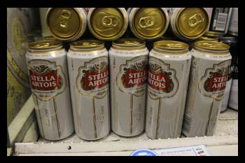

Stella Artois 4x440ml
£5.69
Premium Lager Beer
Stella Artois is a Golden Pilsner Lager with the distinctive taste of Saaz hops
A beautifully balanced, full-flavoured premium lager with a pronounced hoppy bitterness and a crisp, clean and refreshing finish.
Before being poured, we always recommend it has been chilled to between 3-5°C and, of course, you should enjoy a Stella Artois in its unique Chalice, the curves of which are designed to enhance the tempting taste and aroma.
Originally crafted as a Christmas gift for the Belgian town of Leuven over 1,000 years ago, 'Stella' Artois was so well received, that the brewery named it after a star, and decided to give it to the world forever.
Pack Size: 440ml
Brewing expertise
Information
| Alcohol Units |
2.1 |
| ABV |
4.8% vol. |
| Pack Quantity |
440 |
| Pack Measure |
ml |
| Country |
United Kingdom |
| Alcohol Type |
Beer |
|